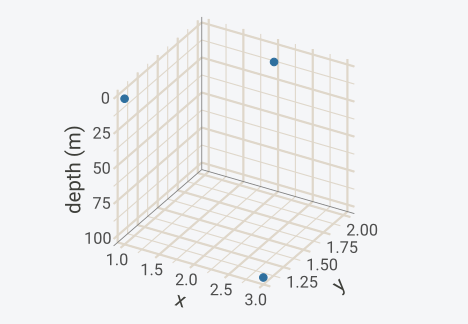
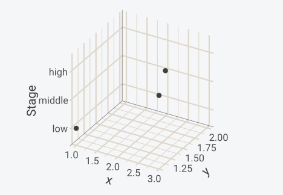
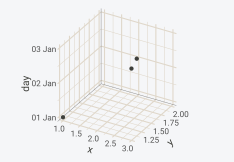
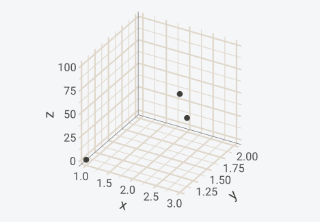
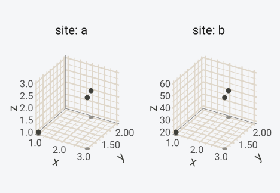
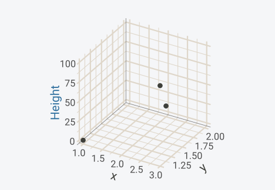

The z scale maps heights from data units into panel positions and
controls their transformations, categories, limits and facets. Set
coord_3d(z_scales = "free") for separate z ranges across
facets. ggplot2 facets have no z scale. Installation is covered in Get started.
Transforming heights
A position scale trains its range from layer data and supplies breaks and labels. The z position family includes z, zmin, zmax, zend and zintercept. A logarithmic transformation therefore also applies to the endpoints of segments.
d <- data.frame(x = 1:3, y = c(1, 2, 1), z = c(1, 10, 100),
top = c(10, 100, 1000))
ggplot(d, aes(x, y, z = z, xend = x, yend = y, zend = top)) +
geom_segment_3d(linewidth = 0.8, colour = "#2E6F9E") +
scale_z_log10(breaks = c(1, 10, 100, 1000)) + coord_3d()
Use positive values with a logarithmic scale.
scale_z_sqrt() compresses large values less strongly, and
scale_z_reverse() turns the axis upside down, which suits
depths below a surface.
ggplot(d, aes(x, y, z = z)) + geom_point_3d(size = 3, colour = "#2E6F9E") +
scale_z_reverse(name = "depth (m)") + coord_3d()
Other continuous transformations go through the
transform argument of
scale_z_continuous().
Categories and dates
A discrete scale places categories at separate z positions in factor-level order. Dates and date-times use their corresponding scale constructors and accept date breaks and labels.
categories <- data.frame(x = 1:3, y = c(1, 2, 1),
stage = factor(c("low", "middle", "high"), levels = c("low", "middle", "high")))
ggplot(categories, aes(x, y, z = stage)) + geom_point_3d(size = 3) +
scale_z_discrete(name = "Stage") + coord_3d()
dated <- data.frame(x = 1:3, y = c(1, 2, 1),
day = as.Date("2026-01-01") + 0:2)
ggplot(dated, aes(x, y, z = day)) + geom_point_3d(size = 3) +
scale_z_date(date_labels = "%d %b") + coord_3d()
Durations such as elapsed hours use scale_z_time(),
which labels the axis as hours, minutes and seconds.
dated$elapsed <- as.difftime(1:3, units = "hours")
ggplot(dated, aes(x, y, z = elapsed)) + geom_point_3d(size = 3) +
scale_z_time() + coord_3d()
Scale limits and coordinate limits
Scale limits participate in data handling before statistical computations. Coordinate limits set the displayed box. Set coordinate limits to inspect part of a surface while retaining the data used to construct it.
ggplot(d, aes(x, y, z = z)) + geom_point_3d(size = 3) +
coord_3d(zlim = c(0, 100))
The shorthand zlim() supplies scale limits in original
data units. Coordinate limits also use original units. Surfaces, solids and fields explains the
transformed units used by statistical surfaces.
Facets
Facets divide the data into separate panels. By default panels share
a z range. Set coord_3d(z_scales = "free") to train a
separate z range per panel. ggplot2 facets have no z scale; their
scales argument controls x and y.
faceted <- data.frame(x = rep(1:3, 2), y = rep(c(1, 2, 1), 2),
z = c(1, 2, 3, 20, 40, 60), site = rep(c("a", "b"), each = 3))
overhead <- light_3d(light_directional(c(0, 0, 1), space = "data"))
ggplot(faceted, aes(x, y, z = z)) + geom_point_3d(size = 3) +
facet_wrap(~site, labeller = label_both) +
coord_3d(z_scales = "free", shadow = shadow_3d(light = overhead, alpha = 0.5))
Free x and y ranges remain controlled by ggplot2’s facet arguments. Use fixed z ranges when equal heights should occupy equal positions across panels.
Guides and themes
A guide draws breaks, tick labels and an axis title. The z guide uses an exterior edge of the projected box. Theme elements for z inherit the corresponding general axis settings.
ggplot(d, aes(x, y, z = z)) + geom_point_3d(size = 3) +
scale_z_continuous(name = "Height", guide = guide_axis_3d(n.dodge = 1)) +
coord_3d() + theme(axis.title.z = element_text(colour = "#2E6F9E"))
Axes, legends and pane styling shows edge-following labels, a colourbar aligned with height and theme elements for individual panes.